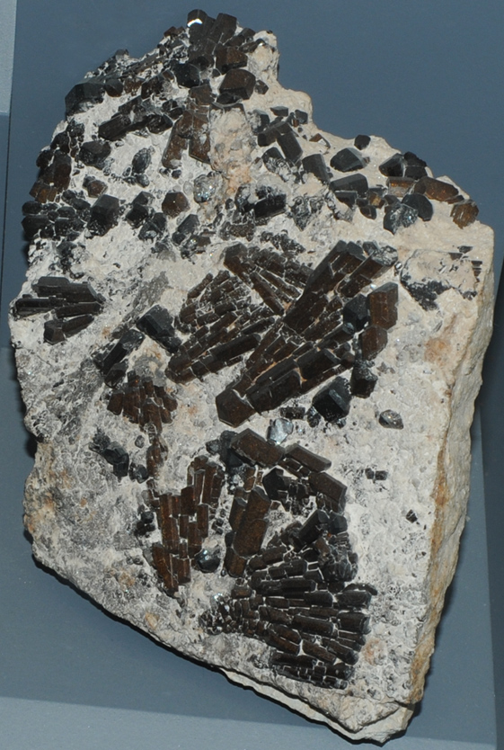

|

| Buergerite is a silicate which contains boron with composition NaFe3Al6(BO3)3Si6O18(O,F)4. This sample is about 18x16 cm and is from Mexiquitic, San Luis Potosi, Mexico. It is on display at the Smithsonian Museum of Natural History.
Mindat: Buergerite
|